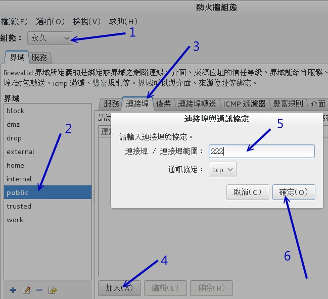

20.1 系统基本设置
我们的 CentOS 7 系统其实有很多东西需要来设置的，包括之前稍微谈过的语系、日期、时间、网络设置等等。 CentOS 6.x 以前有个名为 setup 的软件将许多的设置做成类图形界面，连防火墙都可以这样搞定！不过这个功能在 CentOS 7 已经式微～ 这是因为 CentOS 7 已经将很多的软件指令作的还不赖，又加入了 bash-complete 的功能，指令下达确实还 OK 啦！ 如果不习惯指令，很多的图形界面也可以使用～因此，setup 的需求就减少很多了！ 下面我们会介绍基本的系统设置需求，其实也是将之前章节里面稍微谈过个数据做个汇整就是了！
20.1.1 网络设置 （手动设置与DHCP自动取得）
网络其实是又可爱又麻烦的玩意儿，如果你是网络管理员，那么你必须要了解区域网络内的 IP, gateway, netmask 等参数，如果还想要连上 Internet ，那么就得要理解 DNS 代表的意义为何。如果你的单位想要拥有自己的网域名称， 那么架设 DNS 服务器则是不可或缺的。总之，要设置网络服务器之前，你得要先理解网络基础就是了！ 没有人愿意自己的服务器老是被攻击或者是网络问题层出不穷吧！^_^
但鸟哥这里的网络介绍仅止于当你是一部单机的 Linux 用户端，而非服务器！所以你的各项网络参数只要找到网络管理员， 或者是找到你的 ISP （Internet Service Provider） ，向他询问网络参数的取得方式以及实际的网络参数即可。 通常网络参数的取得方式在台湾常见的有下面这几种：
- 手动设置固定 IP
常见于学术网络的服务器设置、公司行号内的特定座位等。这种方式你必须要取得下面的几个参数才能够让你的 Linux 上网的：
- IP
- 子网络遮罩（netmask）
- 通讯闸（gateway）
DNS 主机的 IP （通常会有两个，若记不住的话，硬背 168.95.1.1 即可）
网络参数可自动取得 （dhcp 协定自动取得）
常见于 IP 分享器后端的主机，或者是利用电视线路的缆线上网 （cable modem），或者是学校宿舍的网络环境等。 这种网络参数取得方式就被称为 dhcp ，你啥事都不需要知道，只要知道设置上网方式为 dhcp 即可。
- 台湾的光纤到府与 ADSL 宽带拨接
不论你的 IP 是固定的还是每次拨接都不相同 （被称为浮动式 IP），只要是通过光纤到府或宽带调制解调器“拨接上网”的，就是使用这种方式。 拨接上网虽然还是使用网卡连接到调制解调器上，不过，系统最终会产生一个替代调制解调器的网络接口 （ppp0） ， 那个 ppp0 也是一个实体网络接口啦！
不过，因为台湾目前所谓的“光世代”宽带上网的方式所提供的调制解调器中，内部已经涵盖了 IP 分享与自动拨接功能， 因此，其实你在调制解调器后面也还是只需要“自动取得IP”的方式来取得网络参数即可喔！
了解了网络参数的取得方法后，你还得要知道一下我们通过啥硬件连上 Internet 的呢？其实就是网卡嘛。 目前的主流网卡为使用以太网络协定所开发出来的以太网卡 （Ethernet），因此我们 Linux 就称呼这种网络接口为 ethN （N 为数字）。 举例来说，鸟哥的这部测试机上面有一张以太网卡，因此鸟哥这部主机的网络接口就是 eth0 啰 （第一张为 0 号开始）。
不过新的 CentOS 7 开始对于网卡的编号则有另一套规则，网卡的界面代号现在与网卡的来源有关～基本上的网卡名称会是这样分类的：
- eno1 ：代表由主板 BIOS 内置的网卡
- ens1 ：代表由主板 BIOS 内置的 PCI-E 界面的网卡
- enp2s0 ：代表 PCI-E 界面的独立网卡，可能有多个插孔，因此会有 s0, s1... 的编号～
- eth0 ：如果上述的名称都不适用，就回到原本的默认网卡编号
其实不管什么网卡名称啦！想要知道你有多少网卡，直接下达“ ifconfig -a ”全部列出来即可！此外，CentOS 7 也希望我们不要手动修改配置文件， 直接使用所谓的 nmcli 这个指令来设置网络参数即可～因为鸟哥的测试机器是虚拟机，所以上述的网卡代号只有 eth0 能够支持～ 你得要自己看自己的系统上面的网卡代号才行喔！
- 手动设置 IP 网络参数
假设你已经向你的 ISP 取得你的网络参数，基本上的网络参数需要这些数据的：
- method: manual （手动设置）
- IP: 172.16.1.1
- netmask: 255.255.0.0
- gateway: 172.16.200.254
- DNS: 172.16.200.254
- hostname: study.centos.vbird
上面的数据除了 hostname 是可以暂时不理会的之外，如果你要上网，就得要有上面的这些数据才行啊！然后通过 nmcli 来处理！ 你得要先知道的是，nmcli 是通过一个名为“连线代号”的名称来设置是否要上网，而每个“连线代号”会有个“网卡代号”， 这两个东西通常设置成相同就是了。那就来先查查看目前系统上默认有什么连线代号吧！
[root@study ~]# nmcli connection show [网卡代号]
[root@study ~]# nmcli connection show
NAME UUID TYPE DEVICE
eth0 505a7445-2aac-45c8-92df-dc10317cec22 802-3-ethernet eth0
# NAME 就是连线代号，通常与后面的网卡 DEVICE 会一样！
# UUID 这个是特殊的设备识别，保留就好不要理他！
# TYPE 就是网卡的类型，通常就是以太网卡！
# DEVICE 当然就是网卡名称啰！
# 从上面我们会知道有个 eth0 的连线代号，那么来查察这个连线代号的设置为何？
[root@study ~]# nmcli connection show eth0
connection.id: eth0
connection.uuid: 505a7445-2aac-45c8-92df-dc10317cec22
connection.interface-name: eth0
connection.type: 802-3-ethernet
connection.autoconnect: yes
.....（中间省略）.....
ipv4.method: manual
ipv4.dns:
ipv4.dns-search:
ipv4.addresses: 192.168.1.100/24
ipv4.gateway: --
.....（中间省略）.....
IP4.ADDRESS[1]: 192.168.1.100/24
IP4.GATEWAY:
IP6.ADDRESS[1]: fe80::5054:ff:fedf:e174/64
IP6.GATEWAY:
如上表的输出，最下面的大写的 IP4, IP6 指的是目前的实际使用的网络参数，最上面的 connection 开头的部份则指的是连线的状态！ 比较重要的参数鸟哥将它列出来如下：
- connection.autoconnect [yes|no] ：是否于开机时启动这个连线，默认通常是 yes 才对！
- ipv4.method [auto|manual] ：自动还是手动设置网络参数的意思
- ipv4.dns [dns_server_ip] ：就是填写 DNS 的 IP 位址～
- ipv4.addresses [IP/Netmask] ：就是 IP 与 netmask 的集合，中间用斜线 / 来隔开～
- ipv4.gateway [gw_ip] ：就是 gateway 的 IP 位址！
所以，根据上面的设置项目，我们来将网络参数设置好吧！
[root@study ~]# nmcli connection modify eth0 \
> connection.autoconnect yes \
> ipv4.method manual \
> ipv4.addresses 172.16.1.1/16 \
> ipv4.gateway 172.16.200.254 \
> ipv4.dns 172.16.200.254
# 上面只是“修改了配置文件”而已，要实际生效还得要启动 （up） 这个 eth0 连线界面才行喔！
[root@study ~]# nmcli connection up eth0
[root@study ~]# nmcli connection show eth0
.....（前面省略）.....
IP4.ADDRESS[1]: 172.16.1.1/16
IP4.GATEWAY: 172.16.200.254
IP4.DNS[1]: 172.16.200.254
IP6.ADDRESS[1]: fe80::5054:ff:fedf:e174/64
IP6.GATEWAY:
最终执行“ nmcli connection show eth0 ”然后看最下方，是否为正确的设置值呢？如果是的话，那就万事 OK 啦！
- 自动取得 IP 参数
如果你的网络是由自动取得的 DHCP 协定所分配的，那就太棒了！上述的所有功能你通通不需要背～只需要知道 ipv4.method 那个项目填成 auto 即可！ 所以来查察，如果变成自动取得，网络设置要如何处理呢？
[root@study ~]# nmcli connection modify eth0 \
> connection.autoconnect yes \
> ipv4.method auto
[root@study ~]# nmcli connection up eth0
[root@study ~]# nmcli connection show eth0
IP4.ADDRESS[1]: 172.16.2.76/16
IP4.ADDRESS[2]: 172.16.1.1/16
IP4.GATEWAY: 172.16.200.254
IP4.DNS[1]: 172.16.200.254
自动取得 IP 要简单太多了！同时下达 modify 之后，整个配置文件就写入了！因此你无须使用 vim 去重新改写与设置！ 鸟哥是认为， nmcli 确实不错用喔！另外，上面的参数中，那个 connection..., ipv4... 等等的，你也可以使用 [tab] 去调用出来喔！ 也就是说， nmcli 有支持 bash-complete 的功能，所以指令下达也很方便的！
- 修改主机名称
主机名称的修改就得要通过 hostnamectl 这个指令来处理了！
[root@study ~]# hostnamectl [set-hostname 你的主机名]
# 1\. 显示目前的主机名称与相关信息
[root@study ~]# hostnamectl
Static hostname: study.centos.vbird # 这就是主机名称
Icon name: computer
Chassis: n/a
Machine ID: 309eb890d09f440681f596543d95ec7a
Boot ID: b2de392ff1f74e568829c716a7166ecd
Virtualization: kvm
Operating System: CentOS Linux 7 （Core） # 操作系统名称！
CPE OS Name: cpe:/o:centos:centos:7
Kernel: Linux 3.10.0-229.el7.x86_64 # 核心版本也提供！
Architecture: x86_64 # 硬件等级也提供！
# 2\. 尝试修改主机名称为 www.centos.vbird 之后再改回来～
[root@study ~]# hostnamectl set-hostname www.centos.vbird
[root@study ~]# cat /etc/hostname
www.centos.vbird
[root@study ~]# hostnamectl set-hostname study.centos.vbird
20.1.2 日期与时间设置
在第四章的 date 指令解释中，我们曾经谈过这家伙可以进行日期、时间的设置。 不过，如果要改时区呢？例如台湾时区改成日本时区之类的，该如何处理？另外，真的设置了时间，那么下次开机可以是正确的时间吗？还是旧的时间？ 我们也知道有“网络校时”这个功能，那如果有网络的话，可以通过这家伙来校时吗？这就来谈谈。
- 时区的显示与设置
因为地球是圆的，每个时刻每个地区的时间可能都不一样。为了统一时间，所以有个所谓的“GMT、格林威治时间”这个时区！ 同时，在太平洋上面还有一条看不见的“换日线”哩！台湾地区就比格林威治时间多了 8 小时，因为我们会比较早看到太阳啦！ 那我怎么知道目前的时区设置是正确的呢？就通过 timedatectl 这个指令吧！
[root@study ~]# timedatectl [commamd]
选项与参数：
list-timezones ：列出系统上所有支持的时区名称
set-timezone ：设置时区位置
set-time ：设置时间
set-ntp ：设置网络校时系统
# 1\. 显示目前的时区与时间等信息
[root@study ~]# timedatectl
Local time: Tue 2015-09-01 19:50:09 CST # 本地时间
Universal time: Tue 2015-09-01 11:50:09 UTC # UTC 时间，可称为格林威治标准时间
RTC time: Tue 2015-09-01 11:50:12
Timezone: Asia/Taipei （CST, +0800） # 就是时区啰！
NTP enabled: no
NTP synchronized: no
RTC in local TZ: no
DST active: n/a
# 2\. 显示出是否有 New_York 时区？若有，则请将目前的时区更新一下
[root@study ~]# timedatectl list-timezones | grep -i new
America/New_York
America/North_Dakota/New_Salem
[root@study ~]# timedatectl set-timezone "America/New_York"
[root@study ~]# timedatectl
Local time: Tue 2015-09-01 07:53:24 EDT
Universal time: Tue 2015-09-01 11:53:24 UTC
RTC time: Tue 2015-09-01 11:53:28
Timezone: America/New_York （EDT, -0400）
[root@study ~]# timedatectl set-timezone "Asia/Taipei"
# 最后还是要记得改回来台湾时区喔！不要忘记了！
- 时间的调整
由于鸟哥的测试机使用的是虚拟机，默认虚拟机使用的是 UTC 时间而不是本地时间，所以在默认的情况下，测试机每次开机都会快上 8 小时... 所以就需要来调整一下时间啰！时间的格式可以是“ yyyy-mm-dd HH:MM ”的格式！比较方便记忆喔！
# 1\. 将时间调整到正确的时间点上！
[root@study ~]# timedatectl set-time "2015-09-01 12:02"
过去我们使用 date 去修改日期后，还得要使用 hwclock 去订正 BIOS 记录的时间～现在通过 timedatectl 一口气帮我们全部搞定，方便又轻松！
- 用 ntpdate 手动网络校时
其实鸟哥真的不太爱让系统自动网络校时，比较喜欢自己手动网络校时。当然啦，写入 crontab 也是不错的想法～ 因为系统默认的自动校时会启动 NTP 协定相关的软件，会多开好几个 port ～想到就不喜欢的缘故啦！没啥特别的意思～ 那如何手动网络校时呢？很简单，通过 ntpdate 这个指令即可！
[root@study ~]# ntpdate tock.stdtime.gov.tw
1 Sep 13:15:16 ntpdate[21171]: step time server 211.22.103.157 offset -0.794360 sec
[root@study ~]# hwclock -w
上述的 tock.stdtime.gov.tw 指的是台湾地区国家标准实验室提供的时间服务器，如果你在台湾本岛上，建议使用台湾提供的时间服务器来更新你的服务器时间， 速度会比较快些～至于 hwclock 则是将正确的时间写入你的 BIOS 时间记录内！如果确认可以执行，未来应该可以使用 crontab 来更新系统时间吧！
20.1.3 语系设置
我们在第四章知道有个 LANG 与 locale 的指令能够查询目前的语系数据与变量，也知道 /etc/locale.conf 其实就是语系的配置文件。 此外，你还得要知道的是，系统的语系与你目前软件的语系数据可能是可以不一样的！如果想要知道目前“系统语系”的话， 除了调用配置文件之外，也能够使用 localectl 来查阅：
[root@study ~]# localectl
System Locale: LANG=zh_TW.utf8 # 下面这些数据就是“系统语系”
LC_NUMERIC=zh_TW.UTF-8
LC_TIME=zh_TW.UTF-8
LC_MONETARY=zh_TW.UTF-8
LC_PAPER=zh_TW.UTF-8
LC_MEASUREMENT=zh_TW.UTF-8
VC Keymap: cn
X11 Layout: cn
X11 Options: grp:ctrl_shift_toggle
[root@study ~]# locale
LANG=zh_TW.utf8 # 下面的则是“当前这个软件的语系”数据！
LC_CTYPE="en_US.utf8"
LC_NUMERIC="en_US.utf8"
.....（中间省略）.....
LC_ALL=en_US.utf8
从上面的两个指令结果你会发现到，系统的语系其实是中文的万国码 （zh_TW.UTF8） 这个语系。不过鸟哥为了目前的教学文件制作， 需要取消中文的显示，而以较为单纯的英文语系来处理～因此使用 locale 指令时，就可以发现“鸟哥的 bash 使用的语系环境为 en_US.utf8”这一个！ 我们知道直接输入的 locale 查询到的语系，就是目前这个 bash 默认显示的语言，那你应该会觉得怪，那系统语系 （localectl） 显示的语系用在哪？
其实鸟哥一登陆系统时，取得的语系确实是 zh_TW.utf8 这一个的，只是通过“ export LC_ALL=en_US.utf8 ”来切换为英文语系而已。 此外，如果你有启用图形界面登陆的话，那么默认的显示语系也是通过这个 localectl 所输出的系统语系喔！
问：如果你跟着鸟哥的测试机器一路走来，图形界面将会是中文万国码的提示登陆字符。如何改成英文语系的登陆界面？答：就是将 locale 改成 en_US.utf8 之后，再转成图形界面即可！
[root@study ~]# localectl set-locale LANG=en_US.utf8
[root@study ~]# systemctl isolate multi-user.target
[root@study ~]# systemctl isolate graphical.target
接下来你就可以看到英文的登陆画面提示了！未来的默认语系也都会是英文界面喔！
20.1.4 防火墙简易设置
有网络没有防火墙还挺奇怪的，所以这个小节我们简单的来谈谈防火墙的一点点数据好了！
防火墙其实是一种网络数据的过滤方式，它可以依据你服务器启动的服务来设置是否放行，也能够针对你信任的用户来放行！ 这部份应该要对网络有点概念之后才来谈比较好，所以详细的数据会写入在服务器篇的内容。由于目前 CentOS 7 的默认防火墙机制为 firewalld， 他的管理界面主要是通过命令行 firewall-cmd 这个详细的指令～既然我们还没有谈到更多的防火墙与网络规则，想要了解 firewall-cmd 有点难！ 所以这个小节我们仅使用图形界面来介绍防火墙的相关数据而已！
要启动防火墙的图形管理界面，你当然就得要先登陆 X 才行！然后到“应用程序”-->“杂项”-->“防火墙”给它点下去，如下面的图示：
 图20.1.1、防火墙启动的链接画面
图20.1.1、防火墙启动的链接画面
之后出现的图形管理界面会有点像下面这样：
 图20.1.2、防火墙图形管理界面示意图
图20.1.2、防火墙图形管理界面示意图
- 组态：“执行时期”与“永久记录”的差异
如图 20.1.2 的箭头 1 处，基本上，防火墙的规则拟定大概有两种情况，一种是“暂时用来执行”的规则，一种则是“永久记录”的规则。 一般来说，刚刚启动防火墙时，这两种规则会一模一样。不过，后来可能你会暂时测试而加上几条规则，如果该规则没有写入“永久记录”区的话， 那下次重新载入防火墙时，该规则就会消失喔！所以请特别注意：“不要只是在执行阶段增加规则设置，而是必须要在永久记录区增加规则才行！”
- 界域 （zone）：依据不同的环境所设计的网络界域 （zone）
玩过网络后，你可能会听过所谓的本机网络、NAT 与 DMZ 等网域，同时，可能还有可信任的 （trusted） 网域，或者是应该被抵挡 （drop/block） 的网域等等。 这些网域各有其功能～早期的 iptables 防火墙服务，所有的规则你都得要自己手动来撰写，然后规则的细分得要自己去规划， 所以很可能会导致一堆无法理解的规则。
新的 firewalld 服务就预先设计这些可能会被用到的网络环境，里面的规则除了 public （公开网域） 这个界域 （zone） 之外，其它的界域则暂时为没有启动的状况。 因此，在默认的情况下，如图 20.1.2 当中的 2 号箭头与 3 号箭头处，你只要考虑 public 那个项目即可！其他的领域等到读完服务器篇之后再来讨论。 所以，再说一次～你只要考虑 public 这个 zone 即可喔！
- 相关设置项目
接下来图 20.1.2 4 号箭头的地方就是重点啦！防火墙规则通常需要设置的地方有：
- 服务：一般来说，如果你的 Linux server 是作为 Internet 的服务器，提供的是比较一般的服务，那么只要处理“服务”项目即可。默认你的服务器已经提供了 ssh 与 dhcpv6-client 的服务端口喔！
- 端口：如果你提供的服务所启用的端口并不是正规的端口，举例来说，为了玩 systemd 与 SELinux 我们曾经将 ssh 的端口调整到 222 ，同时也曾经将 ftp 的端口调整到 555 对吧！那如果你想要让人家连进来，就不能只开放上面的“服务”项目，连这个“端口”的地方也需要调整才行！另外， 如果有某些比较特别的服务是 CentOS 默认没有提供的，所以“服务”当然也就没有存在！这时你也可以直接通过端口来搞定它！
- 丰富规则（rich rule）：如果你有“整个网域”需要放行或者是拒绝的时候，那么前两个项目就没有办法适用， 这时就得要这个项目来处理了。不过鸟哥测试了 7.1 这一版的设置，似乎怪怪的～因此，下面我们会以 firewall-cmd 来增加这一个项目的设置。
- 接口：就是这个界域主要是针对哪一个网卡来做规范的意思，我们只有一张网卡，所以当然就是 eth0 啰！
至于“伪装”、“端口转送”、“ICMP过滤器”、“来源”等等我们就不介绍了！毕竟那个是网络的东西，还不是在基础篇应该要告诉你的项目。 好了！现在假设我们的 Linux server 是要作为下面的几个重要的服务与相关的网域功能，你该如何设置防火墙呢？
- 要作为 ssh, www, ftp, https 等等正规端口的服务；
- 同时与前几章搭配，还需要放行 port 222 与 port 555 喔！
- 区域网络 192.168.1.0/24 这一段我们目前想要直接放行这段网域对我们服务器的连线
请注意，因为未来都要持续生效，所以请一定要去到“永久”的防火墙设置项目里头去处理！不然只有这次开机期间会生效而已～注意注意！ 好了，首先就来处理一下正规的服务端口的放行吧！不过因为永久的设置比较重要，因此你得要先经过授权认证才行！如下图所示。
 图20.1.3、永久的设置需要权限的认证
图20.1.3、永久的设置需要权限的认证
注意如下图所示，你要先确认箭头 1, 2, 3 的地方是正确的，然后再直接勾选 ftp, http, https, ssh 即可！因为 ssh 默认已经被勾选， 所以鸟哥仅截图上头的项目而已！比较特别的是，勾选就生效～没有“确认”按钮喔！呵呵！相当有趣！
 图20.1.4、以图形界面的方式放行正规服务的防火墙设置
图20.1.4、以图形界面的方式放行正规服务的防火墙设置
接下来按下“端口”的页面，如下图所示，按下“加入”之后在出现的窗口当中填写你需要的端口号码，通常也就是 tcp 协定保留它不动！ 之后按下“确定”就好了！
图20.1.5、以图形界面的方式放行部份非正规端口的防火墙设置
因为我们有两个端口要增加，所以请实作两次产生 222 与 555 的端口如下：
 图20.1.6、以图形界面的方式放行部份非正规端口的防火墙设置
图20.1.6、以图形界面的方式放行部份非正规端口的防火墙设置
最后一个要处理的是区域网络的放行，我们刚刚谈到这个部份恐怕目前的图形界面软件有点怪异～所以，这时你可以这样下达指令即可！ 注意，下列的指令全部都是必要参数，只有 IP 网段的部份可以变动掉即可！
[root@study ~]# firewall-cmd --permanent --add-rich-rule='rule family="ipv4" \
> source address="192.168.1.0/24" accept'
success
[root@study ~]# firewall-cmd --reload
最后一行很重要喔！我们上面的图示通通是作用于“永久”设置中，只是变更配置文件，要让这些设置实际生效，那么就得要使用上面的 reload 项目， 让防火墙系统整个完整的再载入一下～那就 OK 啰！这样会使用简易的防火墙设置了吗？ ^_^